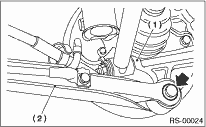
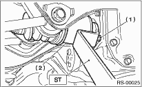

1. Disconnect the ground cable from the battery.
2. Loosen the wheel nuts. Lift up the vehicle, and remove the wheels.
3. Disconnect the connector from the rear vehicle height sensor. (HID model, right side only)

4. Remove the nuts that hold the lateral link and rear vehicle height sensor bracket. (HID model, right side only)

5. Remove bolt (A) and clip (B) fixing the rear vehicle height sensor bracket to the crossmember, then remove the rear vehicle height sensor assembly. (HID model, right side only)

6. Remove the stabilizer.
7. Remove the ABS wheel speed sensor harness from the trailing link.
8. Remove the bolts which secure the trailing link to the housing.

|
(1) |
Rear housing |
|
(2) |
Trailing link |
9. Remove the bolts which secure the lateral link assembly to the rear housing.
10. Remove the DOJ from rear differential using the ST.
| ST 28099PA100 | REMOVER |

|
(1) |
Bolt |
|
(2) |
DOJ |
CAUTION:
Be careful not to damage the side bearing retainer. Always use the bolt shown in figure as supporting points for the ST during removal.
11. Scribe an alignment mark on the rear lateral link adjustment bolt and crossmember.
12. Remove the bolts securing the front and rear lateral links to the crossmember, and detach the lateral link.
CAUTION:
To loosen the adjusting bolt, always loosen the nut while holding the head of adjusting bolt.